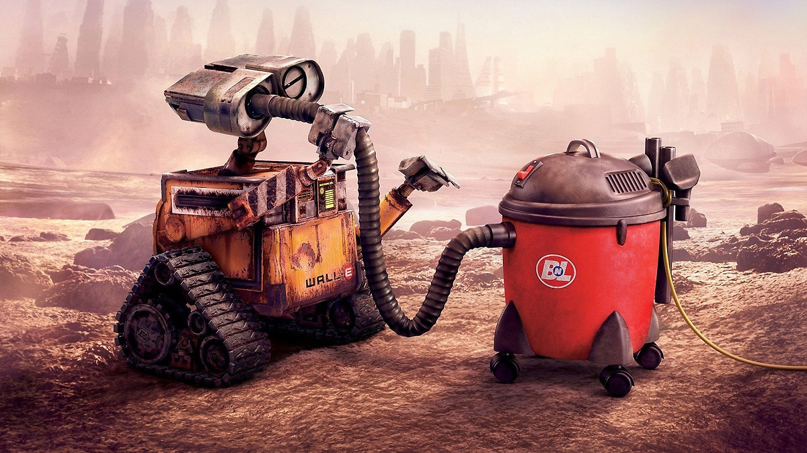

About Wall-E
Wall-E is a robot who was left on earth after humans had left and he was left with no purpose. He is eventually picked up to be deactivated but manages to survive through love.
Wall-E curious about a vacuum cleaner
Wall-E's Characteristics
- He's kind
- He's curious
- He wants to help others
Wall-E's Friend
Wall-E initially has no friends and makes an enemy out of Eve, but eventually the two of them end up falling in love. Click on the link below to read more about her.